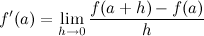
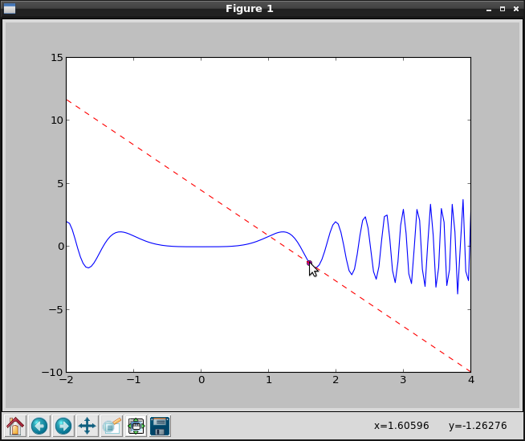

Graficar la tangente de una curva con python, numpy y pylab.
Posted on vie 26 julio 2013 in Tutorial Python • 2 min read
Este artículo se basa en el artículo "Visualizing the tangent" .
La tangente de una curva es una línea recta que toca a la curva en un punto. Está línea recta da la pendiente de la curva. Si la curva representa una serie de tiempo se puede decir la relación de cambio de valores con sólo mirar la tangente.
Suponga que la curva se da como la gráfica de la función y = f(x), se tiene que la pendiente de la curva en el punto (a,f(a)) es igual a su derivada en un

y la ecuación de la recta tangente puede enunciarse
A continuación se muestra el código de la tangente de x*sen(x^3) en el punto 1.6:
```python
!/usr/bin/env python
De numpy se importa sin, linspace y power
from numpy import sin,linspace,power
De pylab se importa plot y show
from pylab import plot,show
Se define la funcion de la curva
def f(x): # sample function return x*sin(power(x,3))
Se evalua la funcion en el rango de -2 a 4 con 150 intervalos
x = linspace(-2,4,150)
Se le pasa a la funcion los valores definidos en x.
y = f(x)
Se le pasa el punto a calcular la tangente de la curva.
a = 1.6
Se le pasa el diferencial con un valor de 0.1
h = 0.1
Se calcula la derivada.
fprime = (f(a+h)-f(a))/h # derivative
Se calcula la tangente
tan = f(a)+fprime*(x-a) # tangent
Se grafica la funcion y la tangente.
plot(x,y,'b',a,f(a),'om',x,tan,'--r')
Se muestra la grafica.
show() ``` A continuación se muestra las gráficas que se generan:

En el artículo original se muestra otro ejemplo.
¡Haz tu donativo! Si te gustó el artículo puedes realizar un donativo con Bitcoin (BTC) usando la billetera digital de tu preferencia a la siguiente dirección: 17MtNybhdkA9GV3UNS6BTwPcuhjXoPrSzV
O Escaneando el código QR desde la billetera: